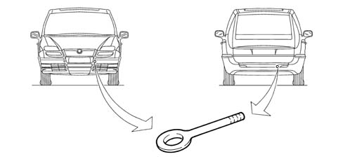

VEHICLE TOWING POINTS
- Path
- Technical Data > VEHICLE INTRODUCTION > VEHICLE TOWING AND JACK POINTS > VEHICLE TOWING POINTS
- Kind
- technical data / specifications
- Applies to
- all engines; all production periods
- Interactive page
- https://sloeber94.github.io/elrnDB-fUlss/en/#/179021626
Applies to: all engines; all production periods
The vehicle is equipped with two threaded seats, one at the front and one at the rear for fitting the tow hook which is in the housing under the bonnet.

Clean the threaded seat carefully before tightening the hook.
Before towing, make sure that the tow hook is fully tightened.
Turn the ignition key to the ON position and then OFF and DO NOT EXTRACT IT !
If the key is extracted the steering lock will come on automatically and it will be impossible to steer the wheels.
When towing the vehicle, it is compulsory to resepct specific highway code regulations relating to the tow hook and procedures for towing on the road.
WARNING: With the engine switched off the brake servo and the power steering are not working so greater effort is required on both the brake pedal and the steering wheel.